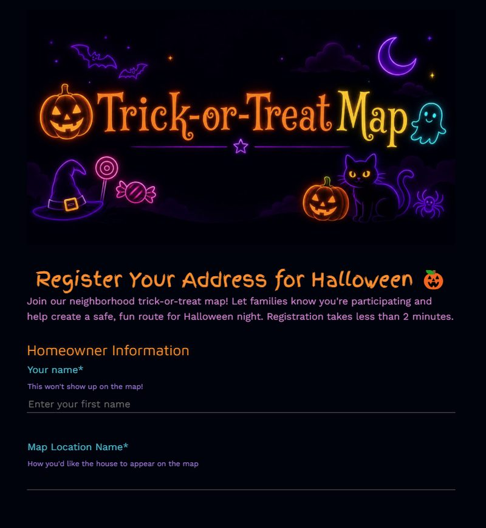

PROJECT 01 · COMMUNITY
Halloween Trick-or-Treat Registration
A themed registration experience that connects neighbours with a live trick-or-treat map. Submissions become map markers with each home's hours, treats, and allergen details.
Explore the live form